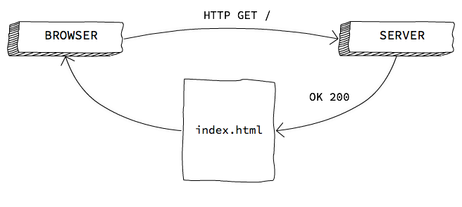
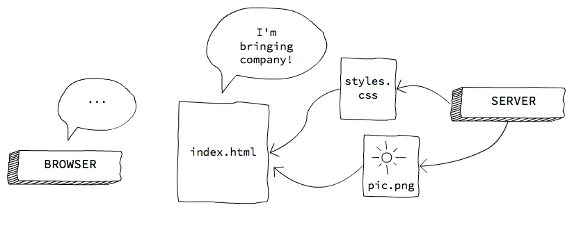
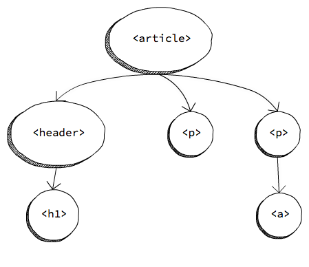
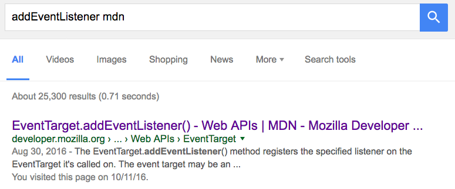

Navegador y DOM
¿Por qué?
Si quieres publicar juegos en la web, hay que saber cómo funciona un navegador, y cómo funciona la Web.
Los navegadores son el entorno donde se van a ejecutar tus juegos, y hay consideraciones técnicas a tener en cuenta, tanto a nivel de interfaz como de seguridad. Asimismo, los navegadores incorporan herramientas de desarrollo que nos serán muy útiles: un depurador, un profiler, un inspector del tráfico de red, etc.
También es necesario tener conocimientos sobre las tecnologías web, aun en el caso de utilizar un motor multiplatforma y exportar a HTML5:
El juego siempre está contenido en una página web, y quizá interese personalizar su apariencia. Para ello, hace falta usar los lenguajes HTML (para el contenido) y CSS (la apariencia).
Es útil para añadir ciertas cosas que quizá no incorpore dicho exportador, como tal vez un botón que ponga el juego a pantalla completa o bien precargar fuentes web.
Siempre que se desarrolla un videojuego multiplataforma, es posible que aparezcan bugs sólo en una de estas plataformas. Para depurar un bug específico de la web, tendrás que usar las herramientas que proporcionan los navegadores, así como tener ciertos conocimientos de las API web que el juego utiliza (por ejemplo, la API de Gamepad o la de WebGL).
Si utilizas un motor o framework de terceros, y necesitas arreglar un bug en dicho motor o implementar una feature que tu juego requiere, obviamente se ha de tener conocimientos de programación web.
Los navegadores
Un navegador es un programa que permite acceder a la Web. Hay que tener en cuenta que no todos los navegadores son iguales, y pese a que la Web está basada en estándares abiertos, no todos los navegadores implementan estos estándares de la misma manera.
Desde el punto de vista del desarrollador, los componentes más relevantes de un navegador son:
El motor de renderizado, que se encarga de "pintar" una página web en la pantalla. Firefox utiliza Gecko, Safari utiliza Webkit, Chrome y Opera utilizan un fork de Webkit conocido como Blink, etc.
La máquina virtual de JavaScript, que se encarga de ejecutar el código JavaScript de la página web. Firefox utiliza SpiderMonkey, mientras que Chrome y otros navegadores –así como Node– utilizan V8.
Esto da lugar a que no todos los navegadores soporten las mismas características y a que aparezcan bugs del motor de render o de la máquina virtual de JavaScript que son específicos a un navegador en concreto.
Para conocer qué características implementa cada navegador, podemos utilizar, entre otros:
- caniuse.com, rápida e intuitiva
- MDN, tiene detalles concretos sobre la implementación y diferencias entre navegadores
Lenguajes en la Web
HTML
HTML (HyperText Markup Language) se utiliza para crear el contenido de una página web: párrafos, títulos, imágenes, vídeos, etc.
Es un lenguaje de marcado basado en etiquetas. Por ejemplo:
<h1>Esto es un título</h1>
CSS
CSS (Cascading Style Sheets) se utiliza para personalizar la apariencia de los elementos HTML: colores, fondos, bordes, su posición en la página, división en columnas, el tamaño, márgenes, etc.
Es un lenguaje declarativo basado en reglas. Por ejemplo:
h1 {
color: red; /* hace que los elementos h1 tengan texto rojo */
}
JavaScript
JavaScript es un lenguaje de programación interpretado, y con él se implementan el comportamiento y la lógica de una página web –si hiciera falta.
Es un lenguaje dinámico orientado a prototipos, con características funcionales.
console.log("Hello, world!");
¿Qué pasa cuando se accede a una página desde un navegador?
Entender cómo funciona el tráfico de red a un nivel básico es necesario para comprender –y poder arreglar o mitigar– ciertas situaciones. Por ejemplo, por qué un juego tarda mucho en cargarse, por qué ciertos assets no se cargan, cómo hacer que la página no se quede en blanco mientras el juego se carga, etc.
Veremos un ejemplo de este flujo paso a paso.
Paso 1. Petición HTTP GET a un servidor

El navegador hace una petición HTTP GET a una URL (que sirve para identificar dónde está cierto recurso en la Web), y si el recurso existe, el servidor lo retorna.
Hay que tener en cuenta que los navegadores disponen de una memoria caché, con lo que si ya tienen dicho recurso en memoria y no ha caducado, no realizan una petición al servidor y utilizan el recurso del que ya disponen.
Paso 2. Descarga de archivos

Los archivos HTML pueden hacer referencia a otros recursos… que el navegador deberá pedir al servidor. Si hemos pedido un archivo HTML, se irá descargando y renderizando sobre la marcha.
Cuando un archivo JS se acaba de descargar, su código se parsea y se ejecuta. Mientras se ejecuta, el navegador queda bloqueado.
Paso 3. Carga finalizada
Cuando todas las imágenes, scripts, CSS, etc. se han cargado, se dispara el evento load de window, que es un objeto global definido en el estándar de JavaScript que incorporan los navegadores.
Es muy común incluir el código que inicializa la ejecución del programa en el handler de ese evento.
window.onload = function () {
// Initilise the program
};
Cómo incluir JavaScript en una página web
Una página web es, en esencia, un archivo HTML que puede incluir otros recursos, como las hojas de estilo CSS y también código JavaScript.
Estructura básica de un documento HTML
Aquí un ejemplo de un documento HTML con un poco de contenido –en este caso, un título (<h1>) y un párrafo (<p>).
<!doctype html>
<html>
<!-- el head es metadata -->
<head>
<title>Cancamusa</title>
<meta charset="utf-8">
</head>
<!-- el body es contenido -->
<body>
<h1>Monkey Island</h1>
<p>Mira detrás de ti, ¡un mono de tres cabezas!</p>
</body>
</html>
Como ves, HTML se basa en incluir unas etiquetas dentro de otras. Hay una etiqueta raíz, <html>, que contiene a su vez dos etiquetas, <head> y <body>. Estas dos etiquetas son necesarias en toda página web.
También se puede observar que en la primera línea hay una etiqueta especial:
<!doctype html>
Con esto le indicamos al navegador que efectivamente estamos utilizando un formato HTML5 o superior –antes había otros estándares, como XHTML.
<head> contiene metadatos relativos a la página, como el título (aparece en las pestañas del navegador, o en los resultados de búsqueda de Google y otros), la codificación de caracteres, etc. Desde aquí también podemos incluir otros archivos, como hojas de estilos CSS.
<body> posee el contenido de la página, lo que ve el usuario. En el ejemplo anterior hay un elemento de título y un párrafo.
¿Dónde va el código JavaScript?
Se puede incluir archivos –y código inline– de JavaScript tanto en el <head> como en el <body, pero esto afecta a cómo se carga la página.
Por defecto, cuando se inicia la carga de un archivo JavaScript el navegador deja de renderizar el HTML hasta que dicho archivo se descargue por completo, se parsee y se ejecute.
Por tanto, si lo descargamos al principio (en el <head> o al principio de <body>) es posible que la página web aparezca en blanco o que retrasemos la carga de algunos assets que quizás sean más importantes.
Si por el contrario, incluimos el JavaScript al final de <body> la página web se renderizará por completo –con lo cual el usuario puede ver algo– pero el archivo tardará más en ejecutarse.
No hay una solución objetivamente óptima para todos los casos. Dependiendo de las características del videojuego (o de la página) interesará un punto de carga diferente.
Nota: esto es ha sido una explicación muy simplificada. Puedes encontrar información más completa en este artículo de Jake Archibald.
Scripts inline y externos
Podemos incluir código JavaScript inline en el HTML con la etiqueta <script>.
<script>
console.log("Hello, world!");
</script>
También podemos tener el código JavaScript en un archivo .js separado. Se incluyen estos archivos con la etiqueta <script>:
<script src="js/game.js"></script>
Cómo se ejecuta el código JavaScript
Modelo asíncrono basado en eventos
En el navegador, JavaScript sigue un modelo asíncrono basado en eventos. Hay que tener en cuenta que, mientras el código JavaScript se está ejecutando, el navegador bloquea todo lo demás, incluida la UI (la interfaz gráfica de usuario).
El modelo asíncrono nos permite programar JavaScript de forma que los bloqueos sean imperceptibles al usuario. La idea es que el código JavaScript no se esté ejecutando siempre (y así la interfaz no estará bloqueada), sino que nos subscribimos a ciertos eventos y ejecutamos sólo código cuando estos eventos se producen.
Lógicamente, tenemos la responsabilidad de que el código no tarde mucho tiempo en ejecutarse, porque entonces sí que el usuario notaría que el navegador se ha quedado bloqueado. Los navegadores, además, suelen bloquear –u ofrecer al usuario esta posibilidad– los scripts de JavaScript que no han terminado al cabo de cierta cantidad de tiempo.
Algunos ejemplos de eventos a los que podemos subscribinos son: la carga de la página, click en un botón o en un enlace, pasar el ratón por encima de un elemento, cuando se ha descargado cierto contenido, etc. También podemos lanzar nuestros propios eventos personalizados.
Un único hilo
Otro aspecto a considerar es que, normalmente, nuestro código JavaScript se ejecutará en un solo hilo (hay excepciones, como el uso de WebWorkers). Es por ello por lo que si hay dos subscripciones a un mismo evento, no se ejecutarán de forma simultánea, sino una detrás de otra. Y mientras un evento se ejecuta, el resto del código espera.
Veamos un ejemplo:
button.onclick = function (evt) {
console.log("Click");
}
// ...
button.trigger('click');
// el botón no se desactiva hasta que el handler de "click"
// haya acabado de ejecutarse
button.disabled = true;
También puedes acceder a este snippet de código online.
El DOM
Los documentos HTML presentan una estructura de árbol. Al incluir unas etiquetas dentro de otras, tenemos una relación jerárquica, ya que algunos elementos son "padres" de otros.
Por ejemplo, pongamos el siguiente fragmento de código HTML:
<article>
<header>
<h1>Un título molón</h1>
</header>
<p>Bla bla bla.</p>
<p>
Más bla, bla, bla y
<a href="http://wikipedia.org">aquí un enlace</a>.
</p>
</article>
Su representación en forma de árbol sería la siguiente:

El DOM (Object Document Model) es una interfaz que implementan los navegadores para que podamos interactuar con dicho árbol y con los elementos HTML que lo pueblan. Podemos tanto manipular los elementos HTML (cambiando su contenido, sus propiedades o bien llamando sus métodos propios), como manipular el árbol en sí, insertando, cambiando e eliminando elementos.
Acceder a elementos del DOM
Acceder a un elemento (o varios) del DOM es una de las operaciones más frecuentes que se hacen.
Por ID
Sólo selecciona un elemento (los ID deben ser únicos), en base a su atributo id de HTML:
<button id="show-fullscreen">Fullscreen</button>
var button = document.getElementById('show-fullscreen');
Acceder a elementos por selector CSS
Esta forma usa la sintaxis de los selectores CSS para localizar uno (o varios) elementos.
// selecciona el primer párrafo que encuentra
var paragraph = document.querySelector('p');
// selecciona el primer elemento con clase .warning
var label = document.querySelector('.warning');
// selecciona TODOS los párrafos
var allPars = document.querySelectorAll('p');
Puedes encontrar más información sobre selectores CSS para usar con querySelector en la MDN.
Iterar sobre una lista de elementos
Hay que tener en cuenta que querySelectorAll no devuelve un array, sino una NodeList, que es un objeto diferente.
No podemos utilizar métodos de Array sobre una NodeList, pero tiene la propiedad length y el operador [], así que podemos iterar sobre ella mediante un bucle:
var buttons = document.querySelectorAll('button');
for (var i = 0; i < buttons.length; i++) {
buttons[i].style = "display: none"; // hide buttons
}
Aunque también podemos iterar con Array.forEach si lo utilizamos con apply…
Navegar el árbol del DOM
Una vez que hemos accedido a un elemento, podemos navegar –recorrer- el árbol del DOM a partir de él.
- Se accede al padre de un elemento con la propiedad
parentNode. - Se accede a la lista de hijos de un elemento con
childNodes. - Se accede al hermano anterior o siguiente con
previousSiblingynextSibling.
Con esto podemos recorrer todo el DOM en cualquier dirección.
Propiedades interesantes de elementos del DOM
innerHTML
Es el interior o contenido del elemento. Puede haber desde simplemente texto, hasta código HTML. Si usamos código HTML, estaríamos de hecho creando nuevos elementos HTML en el DOM al vuelo.
button.innerHTML = 'Aceptar';
// -> <button>Aceptar</button>
p.innerHTML = 'Párrafo con <b>negrita</b>';
// -> <p>Párrafo con <b>negrita</b></p>
style
style nos permite aplicar estilos CSS inline. Estos estilos tienen la máxima prioridad, así que son muy útiles para ocultar/mostrar elementos, por ejemplo.
var previousDisplay = button.style.display;
button.style="display:none"; // oculta cualquier elemento
button.style="display:inline-block;" // muestra el botón
Nota: display:none es universal, pero para mostrar un elemento se ha de elegir entre varios valores, los más comunes son inline, inline-block y block, pero hay otros.
classList
classList nos permite acceder a las clases CSS de un elemento, pudiendo añadir, quitar o alternar (toggle) clases. Esto es muy útil para cambiar el aspecto de la UI en función de las interacciones del usuario.
button.classList.add('loading');
button.classList.remove('loading');
button.classList.contains('loading'); // query
button.classList.toggle('loading'); // doesn't work on IE
Ejemplo: snippet de código online.
Manipular el DOM
Manipular el DOM (esto es, insertar y eleminar elementos) nos permite alterar dinámicamente el contenido de una página web.
Insertar elementos
Ya hemos visto que se pueden insertar elementos HTML nuevos a través de la propiedad innerHTML, pero también los podemos crear desde cero, con createElement:
var button = document.createElement('button');
button.innerHTML = 'Start';
button.setAttribute('type', 'button');
// <button type="button">Start</button>
Es importante tener en cuenta que cuando creamos un elemento con createElement este se encuentra huérfano y no lo veremos renderizado en la página. Para que aparezca, hay que añadirlo al DOM como "familiar" de algún otro elemento –usando para ello appendChild, insertBefore, etc.
document.body.appendChild(button);
Ejemplo: snippet de código online.
Eliminar elementos
Para eliminar un elemento del DOM, bien podemos reemplazarlo por otro –usando replaceChild, o bien podemos eliminarlo del todo.
Del mismo modo que se pueden crear elementos insertando una string con código HTML en la propiedad innerHTML, también se pueden eliminar todos los hijos –y contenido– de un elemento asignando una cadena vacía a innerHTML:
document.body.innerHTML = ''; // remove all the body content
También podemos eliminar un elemento del DOM con remove, y un hijo suyo con removeChild:
var button = document.querySelector('button');
button.remove();
Eventos
Los eventos del DOM son una parte crucial de la programación web, ya que es la manera que tenemos de programar el comportamiento de una página web sin bloquear la UI.
Los elementos del DOM disparan eventos a los que podemos subscribirnos, y ejecutar entonces el comprtamiento que queremos asociado a dicha acción. Por ejemplo, un click en un botón, un cambio del texto de un <input>, cuando se selecciona una checkbox, etc.
No sólo los elementos HTML disparan eventos, sino que otros objetos globales, como window, también lo hacen Por ejemplo: load, resize, etc.
Hay dos maneras de escuchar (o subscribirse a) eventos del DOM:
- Usando el método
Event.addEventListener - Usando los on-event handlers (p. ej:
onclick,onfocus, etc.)
On-event handlers
Los on-event handlers eran originalmente la única manera de subscribirse a eventos, aunque hoy en día disponemos de la alternativa de addEventListener. El inconveniente de usar un on-event handler es que sólo podemos tener un único handler (es decir, el código que se ejecutará cuando el evento se dispara) por evento.
La manera de subscribirse y cancelar la subscribpción con handlers es mediante una asignación:
// subscripción
button.onclick = function (evt) { /* ... */ };
// cancelar la subscripción
button.onclick = null;
Documentación en la MDN.
Event listeners
Usando event listeners podemos subscribirnos varias veces al mismo evento, pudiendo tener varios comportamientos asociados a una misma acción.
Esta es la manera recomendada y más segura, especialmente si se usa código de terceros, ya que no podríamos eliminar de manera accidental un handler existente.
Para subscribirnos a un evento usamos el método addEventListener, y para cancelar la subscripción usamos removeEventListener (al que hay que pasarle la función de callback para que sepa qué subscripción en particular cancelar).
var sayHi = function () { /* */ };
// subscripción
button.addEventListener('click', sayHi);
// cancelar la subscripción
button.removeEventListener('click', sayHi);
Documentación en la MDN.
Bubbling
El bubbling es la metáfora con la que explicamos cómo se comportan los eventos del DOM.
Cuando un elemento dispara un evento, se propaga hacia arriba en el árbol del DOM, como si fuera una burbuja. Es decir, que un evento disparado por un elemento en concreto, podrá ser visto también por su nodo padre y el resto de sus ancestros.
Por ejemplo, en el siguiente código, si el usuario hace click en el botón se dispararía el evento click, al que podríamos subscribirnos tanto desde el <button> como desde la <section> –como ocurre en este caso.
<section>
<button>Click me</button>
</section>
var section = document.querySelector('section')
section.addEventListener('click', function () {
console.log('Clicked…');
});
Puedes probar un snippet de código online.
Interrumpir el bubbling
Hay veces que no nos interesa que se produzca esta propagación, o sólo queremos que se produzca de forma parcial.
Los callbacks de los eventos pueden recibir un argumento, que será un objeto de tipo Event y contiene información sobre el evento (como el elemento originario de que se disparase), así como métodos. Uno de estos métodos, stopPropagation, interrumpe el bubbling.
button.addEventListener('click', function (evt) {
evt.stopPropagation();
});
Cancelar el evento
También puede ocurrir que necesitemos cancelar el evento para evitar las acciones por defecto asociadas a él (por ejemplo, el envío de un formulario, o el cambio de página al hacer click en un enlace).
Nótese que esto no es interrumpir el bubbling. Una vez disparado, el evento ya se ha producido y ya ha comenzado su propagación. Para interrumpir el bubbling debemos usar Event.stopPropagation, como ya hemos visto.
Los eventos se cancelan usando Event.preventDefault:
<a href="file.zip" download>Download zip</a>
var link = document.querySelector('a');
link.addEventListener('click', function (evt) {
// the browser won't detect the link has been clicked
evt.preventDefault();
});
Aviso: hay que tener mucho cuidado al hacer preventDefault, puesto que podemos empeorar la experiencia de usuario. Cancelar los links suele ser una mala idea, anular los clicks con el botón derecho para que el usuario no pueda guardar una imagen es una idea aún peor.
Usos legítimos de preventDefault podrían ser: validar un formulario en el cliente antes de enviarlo, anular ciertas acciones del teclado –por ejemplo, scroll hacia abajo con la barra espaciadora– en un videojuego que use esa tecla, etc.
Documentación en la MDN
La documentación de todo lo que se ha visto está en la Mozilla Developer Network (MDN): http://developer.mozilla.org
Un truco para acceder más rápidamente a la MDN desde un buscador, es añadir mdn a cualquier búsqueda:
